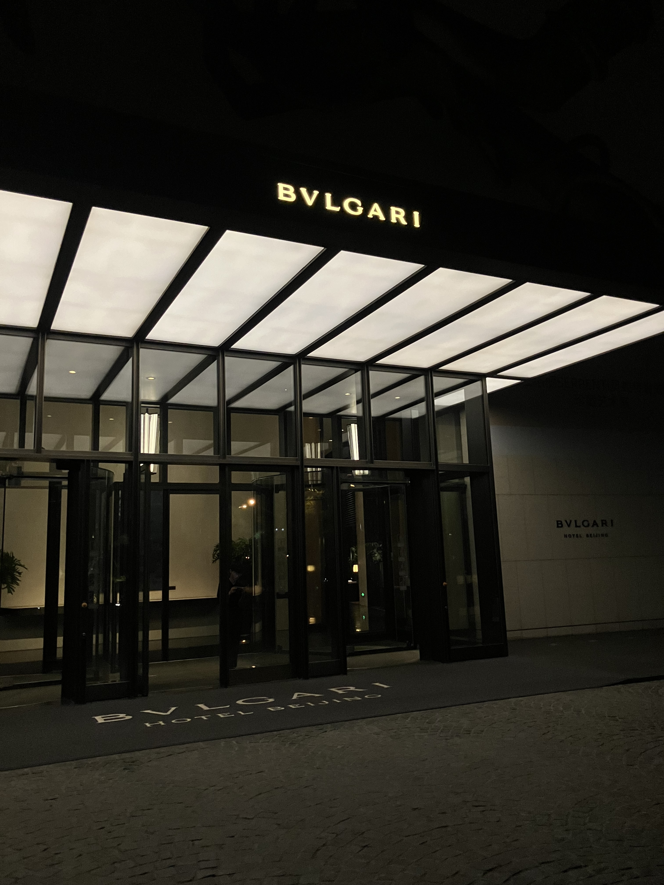
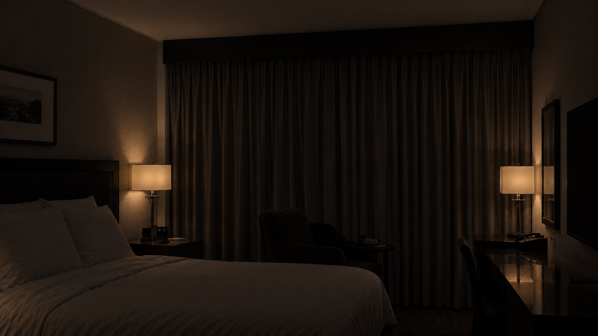
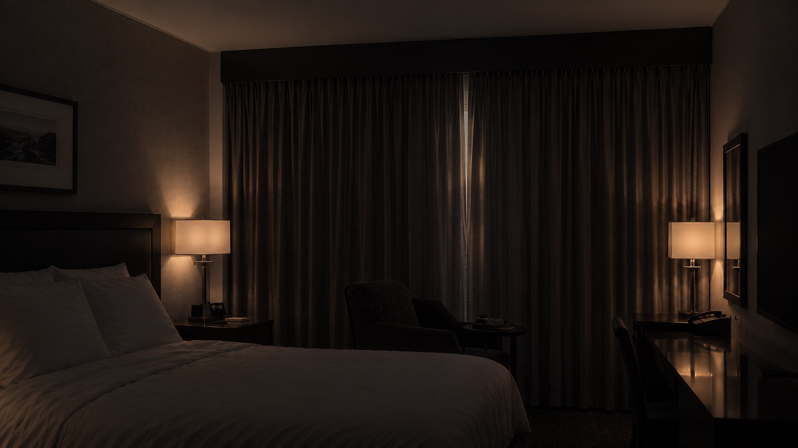

It is a call...
by Shuojun

I fanatically search through everything about the pills from midnight to dawn. This is my last straw and I must try hard to grasp it, or he is leaving… He’s leaving and I can’t take it, I can’t… I must try and I can do this. The machine hums steadily, a persistent chill in the room. I attempt to reduce my fear by learning some truth. I persuade myself to follow his will. I don’t ever think about escaping from his shadow. I search for him.

I stay awake for the whole night. When I catch a glimpse of the daylight seeping through the curtains, my head is very, very heavy.